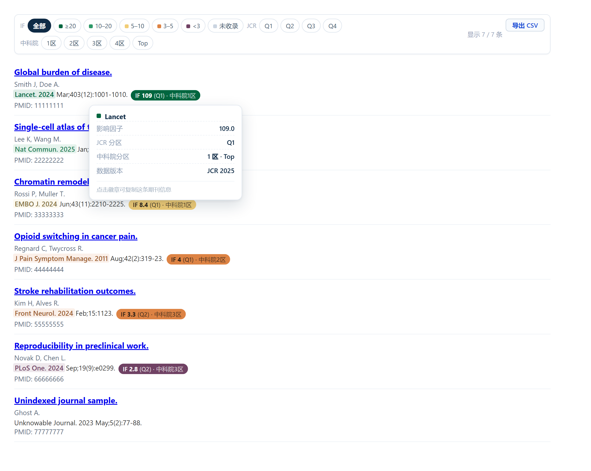
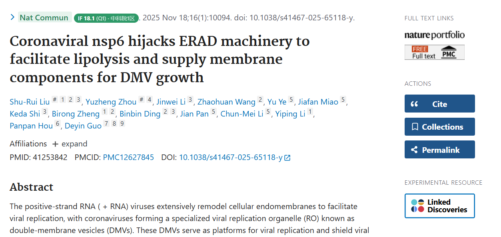
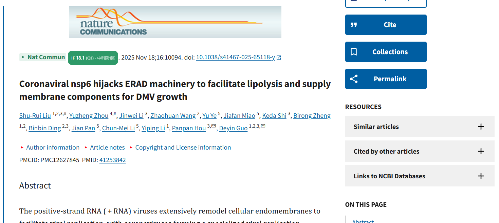

搜索结果页 · 筛选条 + IF 徽章
摘要页 · 刊名高亮 + 行内徽章
详情页 · 徽章与引文同行三层截图自动轮播，点击切换。
搜索结果与详情页的刊名按 IF 等级着色，紧跟 IF 与分区徽章，扫一眼即可筛掉低分文献。
按 IF 档位、JCR Q1–Q4、中科院分区、Top 组合过滤，一键导出可见条目为 CSV（Excel 直接打开）。
鼠标停在徽章上即显示期刊全称、缩写、IF、JCR、中科院分区与数据版本，无需跳转页面。
点徽章即复制「期刊全称 IF 14.7 (Q1) 中科院1区」到剪贴板，写引文直接粘贴。
弹窗一键拉取最新期刊库合并到本地，无需重装；缺失期刊点小问号即可反馈。
仅手动更新时联网，期刊库与设置存 chrome.storage.local，不采集、不上传。
| Lazy Scholar | Scholarscope | 本插件 | |
|---|---|---|---|
| 影响因子标注 | ✅ | ✅ | ✅ |
| JCR 分区（Q1–Q4） | ❌ | ✅ | ✅ |
| 中科院分区 + Top | ❌ | ❌ | ✅ |
| 结果页组合筛选条 | ❌ | 部分 | ✅ 多选叠加 |
| 导出 CSV | ❌ | ❌ | ✅ 仅导出可见条目 |
| 服务器依赖 | 美国节点 | 上海节点 | 无，纯本地 |
| 隐私 | 需联网请求 | 需联网请求 | 零请求，断网可用 |
| 价格 | 免费 | 部分收费 | 免费开源 MIT |
同类工具信息基于公开版本（2026-11），如有出入以官方为准。
D:\Tools\Pubmed-IF-Tag。解压后勿移动或删除，扩展从该目录加载。edge://extensions/（Chrome 为 chrome://extensions/）。当前最新 v1.3.3。商店版自动更新；侧载版需手动换包，插件里点版本号即可检查更新。
edge://extensions/ 点刷新 ↻，再按 Ctrl+F5。期刊数据可在弹窗内一键更新，无需换包。商店版自动更新（微软审核 1–7 个工作日）；本页 zip 上传即生效，急着用新功能可侧载。
| v1.3.3 | 增加了中英文界面本地化（i18n）支持，商店清单可显示中文名称与描述。 |
|---|---|
| v1.3.2 | 修复了摘要页 IF 徽章被插进刊名高亮块内部、导致两个色块重叠并换行的问题；徽章现在紧跟刊名同行显示。感谢 Dr. Xiang 反馈。 |
| v1.3.1 | 修复了徽章悬停信息卡鼠标移走后不消失的问题；增加了筛选条组内多选叠加、按钮悬停中文说明与「?」帮助面板。 |
| v1.3.0 | 结果页新增常驻筛选条：按 IF 档位（≥20 / 10–20 / 5–10 / 3–5 / <3 / 未收录）、JCR Q1–Q4、中科院 1–4 区与 Top 组合过滤，只显示你要的条目，右侧实时显示「显示 X / Y 条」。 新增导出 CSV：只导出当前筛选后可见的条目，含期刊、年份、IF、JCR 分区、中科院分区、Top、标题、PMID 与链接，UTF-8 BOM 编码，Excel 直接打开不乱码。 新增徽章悬停信息卡：鼠标停在徽章上展开期刊全称、缩写、IF、JCR、中科院与数据版本，纯展示不挡点击。 筛选条会贴在 PubMed 顶部导航下沿常驻；翻页、换关键词后自动重建并保留你的筛选条件。 |
| v1.2.1 | 新增在线查期刊分区：输入期刊全称、PubMed 缩写或 ISSN，即可查影响因子、JCR 分区、中科院大类分区与 Top，全表也能下载成 CSV/JSON。 标签配色改为 3 分门槛：IF 低于 3 分（不含）统一归入「其他」，不再按旧阈值着绿。 期刊库修正 3 本可按刊名对上、但分区表 ISSN 字段缺失的刊（Computer Law & Security Review、Intelligent Systems in Accounting Finance & Management、Mutation Research），现 12988 条带中科院分区；新增 scripts/verify-journal-db.py，可把内置库与 JCR 2025 / 分区表 2025 逐条比对（已核为零差异）。性能：结果页与详情页的扫描改到浏览器空闲时段，并跳过插件自己插入的标签节点，不再「标注触发重扫」自己触发自己；期刊库查询改走前缀索引，查不到的刊不再逐条扫全表。 修复：点过「更新期刊数据」后再升级插件，旧快照会把新版内置库的 IF / 分区盖回旧值（现在旧快照只补内置库没有的刊）；网络卡住时拉取数据不再无限等待，9 秒超时后自动按备用源重试。 |
| v1.2.0 | 期刊库升级到 JCR 2025（2026-06-17 发布），并新增中科院分区表 2025：内置期刊从 3374 本扩到 13575 本，标签显示为「IF 13.6 (Q1) · 中科院1区」；设置页新增「显示中科院分区」开关，Top 期刊在悬停与复制文本里标出。 注意：库格式多了中科院字段，1.1.2 及更早版本点「更新期刊数据」会提示解析失败（本地数据不受影响，不会变少），下载本页安装包升级即可正常使用。 |
| v1.1.2 | PMC 搜索结果页（/search/）也显示 IF 标签：逐条读取结果列表里 citation-part 的刊名并查表，命中就把「刊名. 年份」高亮、行尾追加 IF/分区徽章；翻页与排序后由页面监听自动重新标注。 |
| v1.1.1 | 修复 PMC 全文页不显示标签：注入范围补上 pmc.ncbi.nlm.nih.gov（含旧路径 www.ncbi.nlm.nih.gov/pmc）；内容脚本新增 PMC 分支——从标题下方引文行里的刊名按钮取缩写查表，命中后高亮刊名并在其后追加 IF/分区徽章；PMC 页上「反馈未收录」的链接改为读页面 meta 里的 PMID。 |
| v1.1.0 | 弹窗版式重排：版本号移到标题右侧，点一下仍可检查新版本；主页入口并入首行 IF 图标；「恢复内置库」升为主位，悬停时在面板内展开作用说明；「反馈与建议」压暗、「打开 GitHub」换成图标，收在下一行右侧；页脚「仅自用」改为版权声明。版本提示文案简化为「新版本 vX.Y.Z」，点一下直接下载安装包。 |
| v1.0.11 | 检查更新改读主页的 version.json，避开 GitHub API 的匿名限流（每小时 60 次，撞上就报「无法检查」）；页脚版本号与「主页」之间补上分隔符，不再黏成「v1.0.10主页」。 |
| v1.0.10 | 弹窗里的「有新版本」改成点一下直接下载新包；下载后原位给出步骤说明入口。Chrome 用户即使 Edge 已上架，也走这条路径更新。 |
| v1.0.9 | 反馈只需填刊名，IF 与分区由系统查 JCR 表自动补；主页反馈合成一个三标签页；新增二级设置页；版本检查改为手动点版本号。 |
| v1.0.8 | 弹窗精简：去掉功能清单与重复统计行，链接分主次两层，更新按钮改名「更新期刊数据」，版本号改为动态读取。 |
| v1.0.7 | 远程更新时校验库条数，挡住 CDN 返回旧缓存导致的「更新后反而变少」。 |
| 持续 | 期刊数据年度同步：每年随 JCR 与中科院分区新表发布后更新内置期刊库。 |
|---|
| storage | 保存更新后的期刊库、你的显示设置与更新记录，仅本机可见，卸载即清除。 |
|---|---|
| api.github.com | 点「更新期刊数据」或点版本号检查更新时，读取仓库里的期刊数据文件或版本号。 |
| cdn.jsdelivr.net | 同上，作为备用数据源（GitHub 直连不稳定时使用）。 |
| raw.githubusercontent.com | 同上，第三个备用源。 |
| pubmed.ncbi.nlm.nih.gov | 只在 PubMed 页面上读取页面里的期刊名与年份，用于匹配标签；在你点「导出 CSV」时由本地生成文件，不上传。 |
先确认「加载解压缩的扩展」选中的目录里有 manifest.json，且扩展开关是开启状态。然后回到 PubMed 按 Ctrl+F5。如果之前加载过旧目录，那个目录被移动或删除后扩展会失效，需要删掉旧条目、重新加载当前目录。